/math-a3904f143141153cc70766aff62f962c.png "n\!") をサンプルサイズとし、
をサンプルサイズとし、/math-2fccdd06e4c2b79e4f65f2f532fdf9ec.png "n_{1}\!") をイベントまたは成功の数とします。標本比率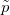は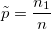で説明されます。
をイベントまたは成功の数とします。標本比率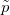は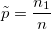で説明されます。
をサンプルサイズとし、をイベントまたは成功の数とします。標本比率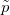は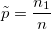で説明されます。
/math-2225a33c170f19586f1ee1de06e36962.png "p\!") をサンプル比率とし、
をサンプル比率とし、/math-98a2a58d47208a196dce8aebf1187a7b.png "p_{0}\!") は仮説比率としてこの関数は仮説を検定します。
は仮説比率としてこの関数は仮説を検定します。
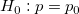 vs 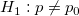, 両側検定
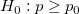 vs 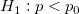, 上側検定
/math-9a14db95eaad70a65f7cde4742e6cfec.png "H_0:p\le p_{0}\!") vs 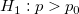, 下側検定
vs 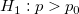, 下側検定
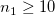 および 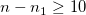 のとき、二項分布の正規近似を使用してp 値を計算できます。検定を行うために、次のようにして /math-814b9f64b478b6caf94e723a0e6814c5.png "z\!") と
と /math-c619dfb3f0ada810733c791d3e461ade.png "p_{value}\!") の値を計算します。
の値を計算します。
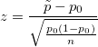
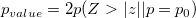 両側検定
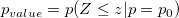 上側検定
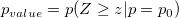 下側検定
信頼度が /math-378df00d12056b404d7d02aef9d8650b.png "1-\alpha") と等しい場合、サンプルの比率における信頼区間は以下のようにして与えられます。
と等しい場合、サンプルの比率における信頼区間は以下のようにして与えられます。
| 帰無仮説 | 信頼区間 |
|---|---|
| 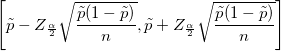 | |
| 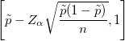 | |
|
|
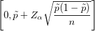 |
Originでは、比率の正確検定は、二項検定をベースにします。
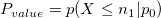
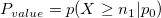
:
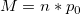のようにします。
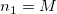 のとき 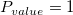
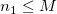 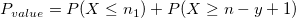の時、yは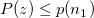 および 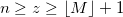のようにzのためのカウントです。
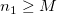 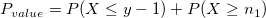の時、yは および 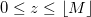のようにZのためのカウントです。
正確な信頼区間：信頼係数は
| 帰無仮説 | 信頼区間 |
|---|---|
|
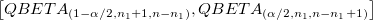 | |
|
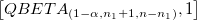 | |
|
|
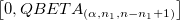 |
ここで、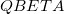 は、ベータ分布の分位点関数を表します。